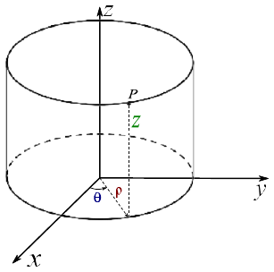
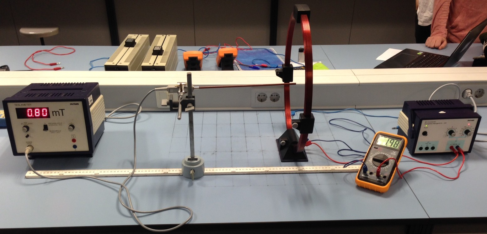
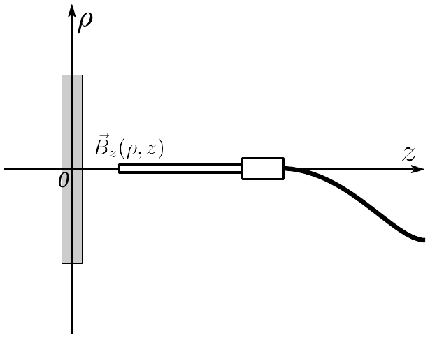

Campo magnético
Objetivo
Se trata de obtener una estimación de la permeabilidad del vacío mediante la medida de la intensidad de campo magnético creado por una bobina. Se obtendrán medidas de la intensidad del campo a lo largo del eje de la bobina. Usando los resultados teóricos se podrá obtener un valor de µ0.
El campo magnético estático creado por un filamento de corriente, en el caso de corriente constante, viene dado por la ley de Biot-Savart,
donde µ0 = 4π 10-7 T· m· A-1 la permeabilidad del vacío, →−r es el vector de posición del punto del espacio donde se calcula el campo, →−r0 es un punto genérico del filamento de corriente y es el vector elemento de corriente por el filamento, en el cuál I es la corriente eléctrica que circula a lo largo del filamento, y es el vector desplazamiento de la corriente, calculado en el punto genérico
La bobina se puede considerar como una espira circular de radio R, con N vueltas,
por la cual circula una intensidad de corriente I. Seguidamente, usaremos la ley de Biot- Savart para calcular el campo producido por la bobina. Para ello, elegimos un sistema de coordenadas como sigue. El eje común de las bobinas se toma como eje z, de tal manera que el centro de la bobina esta´ en z = 0. La corriente I circula por la bobina recorriendo en sentido antihorario un círculo de radio R en el plano z = 0. El campo magnético sobre un punto cualquiera del espacio resulta más sencillo si se utilizan coordenadas cilíndricas y sus respectivos vectores unitarios asociados tal y como se muestra en la figura 1.
Con estas expresiones y usando argumentos de simetría, el campo magnético de la
bobina resulta:

Figura 1: Ejemplo de sistema de coordenadas cilíndricas.

Figura 2: Montaje experimental.
es decir, el campo no depende de la coordenada θ. Una simplificación considerable ocurre cuando consideramos el campo en el eje de la bobina, es decir, cuando ρ = 0. Entonces,
El aspecto general del montaje es el de la figura 2. El sistema de referencia es como sigue. El origen está en el centro de la bobina. El eje z es el eje longitudinal perpendicular al plano de la bobina. El campo magnético no depende del ángulo θ, ni tiene componente θ, así que se es .
La barra de la sonda Hall indica la dirección del campo que se está midiendo, esto es, hay que colocarla según el eje z si se quiere medir y según el eje ρ si se mide .Para medir la componente (ver Fig. 3), se ha de colocar la barra de la sonda a lo largo del eje z. El extremo de la sonda indica el punto del espacio en el que queremos medir el campo magnético.
Es importante calibrar la sonda Hall antes de cualquier medida. Se debe realizar la calibración en ausencia de campo magnético generado por las bobinas. Además, conviene

Figura 3: Medida de las componentes del campo magnético con una sonda Hall.
tener en cuenta ciertas normas generales de seguridad. En general, los equipos de los laboratorios están preparados para su manejo por parte de los alumnos de las asignaturas de Física. Sin embargo, en el caso de la bobina, la corriente que circula por la bobina no es pequeña. Es, pues, de sentido común reducir la corriente a cero cada vez que se vaya a manipular el circuito. Una vez elegido el montaje adecuado para la medición, se vuelve a introducir la corriente.
Medir el diámetro de la bobina 2R.
Alimentar la bobina con una intensidad I = 2 A. El número de vueltas de la bobina es N = 100. Para la corriente anterior, se van a tomar 20 medidas de la componente axial (Bz) del campo para ρ = 0 m entre z = 0 cm y z = 20 cm.
| z(±εz) | Bz(±εBz ) | t = (z2 + R2)−3/2 | εt |